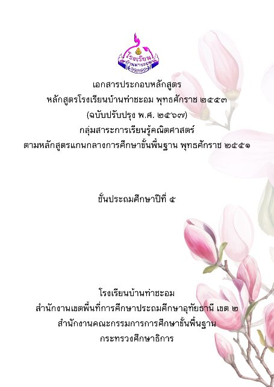
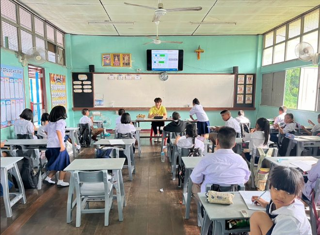
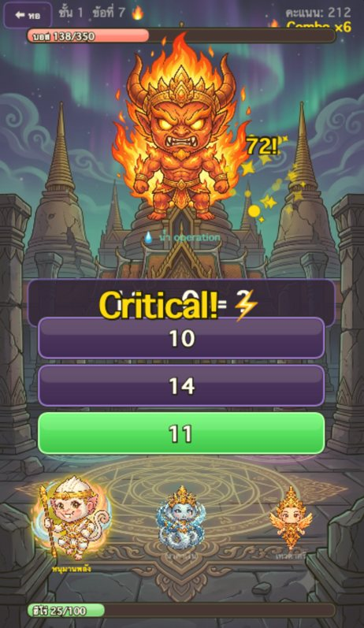
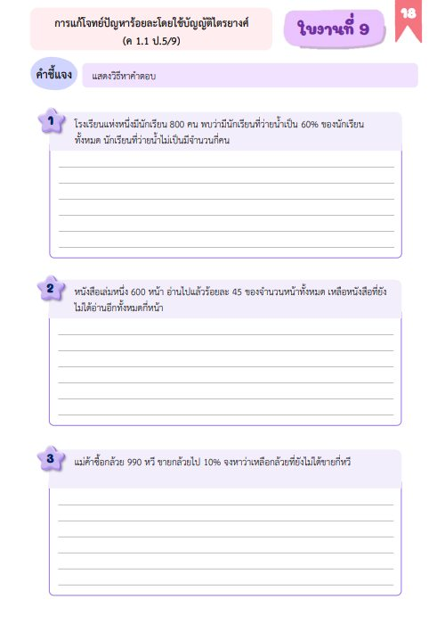
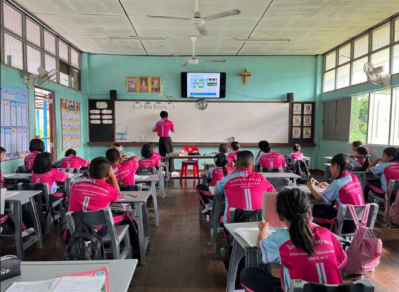
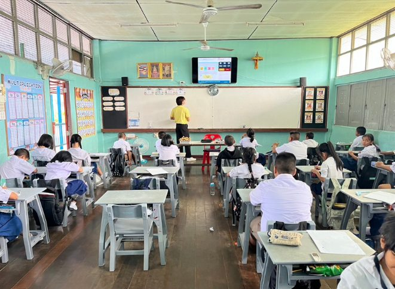

ด้านการจัดการเรียนรู้
ลักษณะงานครอบคลุมการสร้างและพัฒนาหลักสูตร การออกแบบและจัดกิจกรรมการเรียนรู้ การสร้างสื่อ/นวัตกรรม/เทคโนโลยี การวัดและประเมินผล การศึกษาวิเคราะห์เพื่อพัฒนาการเรียนรู้ การจัดบรรยากาศ และการอบรมคุณลักษณะที่ดีของผู้เรียน — ขับเคลื่อนด้วยการพัฒนาทักษะความคล่องแคล่วในการคิดคำนวณ (บวก ลบ คูณ หาร) ของนักเรียนชั้นประถมศึกษาปีที่ 4–6 ผ่านเกมการศึกษา “เดชศาสตร์อนันต์” ร่วมกับระบบติดตามผล Teacher Dashboard
32 คะแนน · 8 ตัวชี้วัดย่อยการสร้างและหรือพัฒนาหลักสูตร
จัดการวิเคราะห์หลักสูตร มาตรฐานการเรียนรู้และตัวชี้วัด นำไปจัดทำรายวิชาและโครงสร้างรายวิชาคณิตศาสตร์พื้นฐาน ให้สอดคล้องกับหลักสูตรแกนกลางการศึกษาขั้นพื้นฐาน พุทธศักราช 2551 (ฉบับปรับปรุง 2560) และหลักสูตรสถานศึกษาโรงเรียนบ้านท่าชะอม

ออกแบบการจัดการเรียนรู้
ศึกษาปัญหาจากผลคะแนน NT และ O-NET ของนักเรียน พบว่าทักษะการคำนวณเป็นจุดอ่อนหลัก จึงออกแบบ Game Design Document (GDD) ตามผังการดำเนินงาน 7 ขั้น — วิเคราะห์ปัญหา, ออกแบบสื่อ, พัฒนาสื่อ, ตรวจสอบคุณภาพ, ทดลองใช้และหาประสิทธิภาพ, เผยแพร่ผ่าน OBEC Content Center และประเมินผลเพื่อพัฒนาต่อยอด ด้วยเทคโนโลยี HTML5 Canvas, Vanilla JavaScript, Firebase Firestore และ GitHub Pages

การจัดกิจกรรมการเรียนรู้
จัดกิจกรรมการเรียนรู้ฝึกความคล่องแคล่วในการคิดคำนวณ (บวก ลบ คูณ หาร) ผ่านเกมการศึกษา “เดชศาสตร์อนันต์” โดยให้ผู้เรียนฝึกปฏิบัติด้วยตนเองเป็นประจำผ่านมือถือหรือคอมพิวเตอร์ในห้องเรียน/ห้องคอมพิวเตอร์

สร้างและหรือพัฒนาสื่อ นวัตกรรม เทคโนโลยี และแหล่งเรียนรู้
พัฒนาเกมการศึกษา “เดชศาสตร์อนันต์” ด้วย HTML5 Canvas, JavaScript และ Firebase เผยแพร่ผ่าน GitHub Pages ให้นักเรียนเข้าถึงได้ทันทีผ่านเว็บเบราว์เซอร์บนมือถือ ไม่ต้องติดตั้งแอป




การวัดและประเมินผล
ใช้วิธีหลากหลาย เหมาะสม สอดคล้องมาตรฐาน โดยใช้แบบทดสอบวัดความคล่องแคล่วในการคิดคำนวณ (บวก ลบ คูณ หาร) ก่อน–หลังใช้เกม ประกอบกับข้อมูลความแม่นยำและสถิติการเล่นจากระบบ Teacher Dashboard แล้วนำผลไปใช้แก้ไขปัญหาการจัดการเรียนรู้

ศึกษา วิเคราะห์ และสังเคราะห์ เพื่อแก้ปัญหาหรือพัฒนาการเรียนรู้
ศึกษางานวิจัยที่เกี่ยวข้องด้านความคล่องแคล่วทางคณิตศาสตร์ (Mathematical Fluency), การจัดการเรียนรู้ผ่านเกม (Game-Based Learning) และเกมการศึกษาเพื่อพัฒนาทักษะคณิตศาสตร์ แล้วนำความรู้มาวางแผนแก้ปัญหาการเรียนรู้ บันทึกรายละเอียดไว้หลังแผนการจัดการเรียนรู้
จัดบรรยากาศที่ส่งเสริมและพัฒนาผู้เรียน
พัฒนาการจัดบรรยากาศในชั้นเรียนให้เหมาะสมกับวัยของผู้เรียน เช่น จัดบรรยากาศการเล่นเกม เปิดคลิปวิดีโอ ให้ผู้เรียนรู้สึกสนุกเร้าใจ กระตุ้นให้อยากมีส่วนร่วม เปิดโอกาสให้ทุกคนนำเสนอความคิดเห็น และใช้สื่อเทคโนโลยีช่วยลดระยะเวลาในการเรียนรู้และทำความเข้าใจง่ายขึ้น

อบรมและพัฒนาคุณลักษณะที่ดีของผู้เรียน
ส่งเสริมคุณลักษณะที่ดีของผู้เรียน คือ มีวินัย ปฏิบัติตามข้อตกลงของห้องเรียนระหว่างทำกิจกรรมการเรียนรู้

ผลลัพธ์ (Outcomes) และตัวชี้วัด (Indicators)
ผลลัพธ์ที่คาดหวังกับผู้เรียน
- นักเรียนได้เรียนหน่วยเสริมทักษะคิดคำนวณ ป.4–6 เชื่อมโยงกับเกม “เดชศาสตร์อนันต์”
- เกมปรับระดับความยากอัตโนมัติให้เหมาะกับพื้นฐานผู้เรียนแต่ละคน
- Teacher Dashboard วิเคราะห์จุดอ่อนรายปฏิบัติการเป็นรายบุคคล
- กลไกเกม (บอส วีรบุรุษ คอมโบ) ลดความเบื่อหน่ายและความกลัววิชาคณิตศาสตร์
- ตัวละครตำนานไทยปลูกฝังความภาคภูมิใจในวัฒนธรรมควบคู่การฝึกวินัย
ตัวชี้วัดที่วัดผลได้จริง
- มีหน่วยการเรียนรู้/แผนการสอนใช้เกมครบทุกระดับชั้น ป.4–6
- นักเรียนทุกคนเข้าเล่นเกมผ่านมือถือได้จริง
- เกมใช้งานได้จริงพร้อม Leaderboard, Classroom Mode, Teacher Dashboard
- มีรายงานความแม่นยำและผลแบบทดสอบก่อน–หลังของนักเรียนทุกคน
- ผู้เรียนร้อยละ 82 ผ่านเกณฑ์ความถูกต้อง และร้อยละ 68 ผ่านทั้งสองเกณฑ์
| ผลการเรียนรู้ | ร้อยละความถูกต้อง | ร้อยละคำตอบเข้าเกณฑ์ | เวลาเฉลี่ย/ข้อ (วินาที) |
|---|---|---|---|
| แบบทดสอบ (pre → post) | 62% → 81% | 35% → 58% | 4.2 → 2.6 |